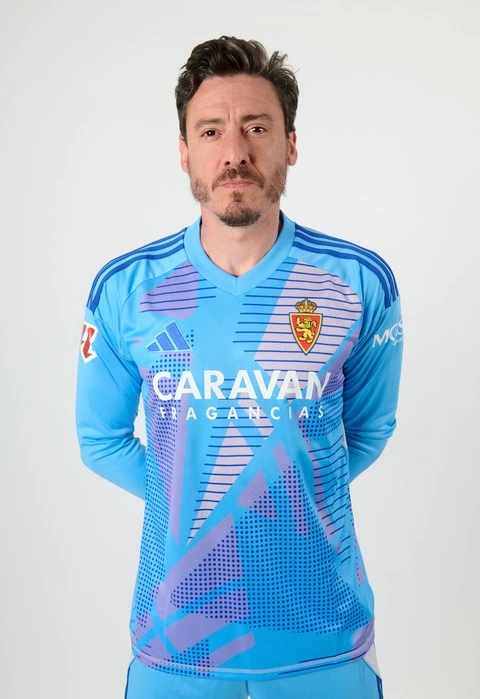

Cristian Darío Álvarez Azad (Rosario, Santa Fe, 13 de noviembre de 1985), deportivamente conocido como Cristian Álvarez, es un futbolista argentino. Se desempeña como arquero y su actual equipo es el Real Zaragoza de la Segunda División de España.
Se formó en las divisiones inferiores de Tiro Federal y de Rosario Central, donde debutó con el primer equipo el 23 de febrero de 2006 ante Cerro Porteño por la Copa Libertadores. Tanto en el Torneo Clausura 2006 como en la Copa se repartió la titularidad del arco de Central con Jorge Broun, Juan Marcelo Ojeda y Hernán Castellano.

Iván Azón Monzón (Zaragoza, Aragón, España, 24 de diciembre de 2002) es un futbolista español que juega como delantero en el Real Zaragoza de la Segunda División de España.
Comenzó jugando en Marianistas y luego en la U.D. Amistad para llegar al Real Zaragoza en el segundo año de alevines. El segundo año de juveniles fue cedido a El Olivar. A su vuelta al equipo maño jugó la Liga Juvenil de la UEFA 2019-20